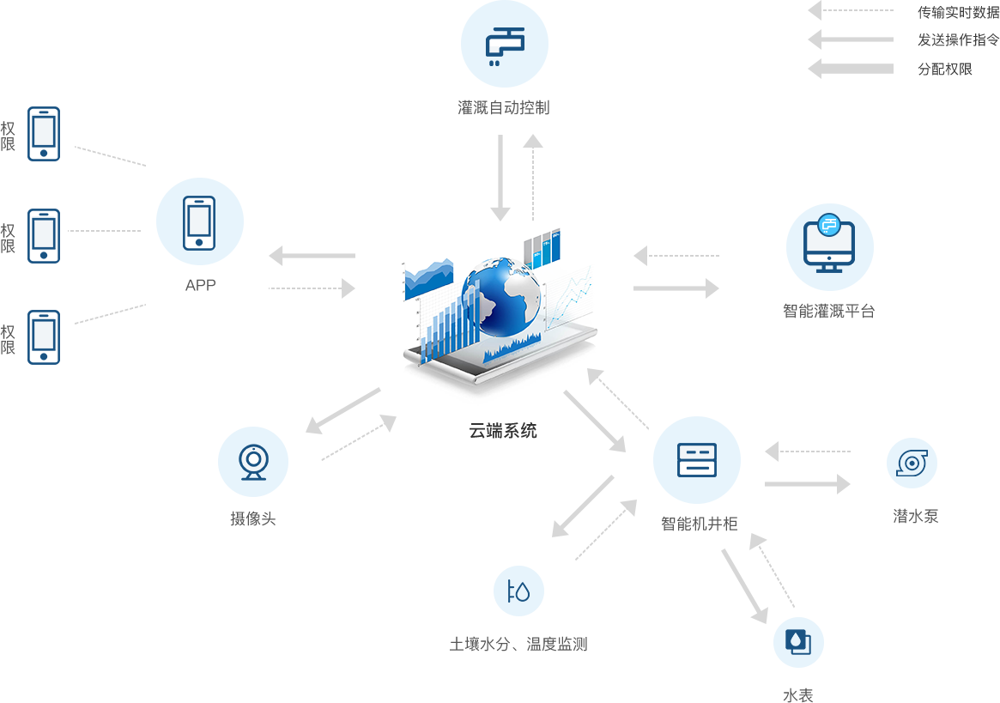

农业灌溉
系统介绍

车控终端
系统能自动感测到什么时候需要灌溉，灌溉多长时间；系统可以自动开启灌溉，也可以自动关闭灌溉；可以实现土壤太干时增大喷灌量，太湿时减少喷灌量。要实现此功能充分利用可编程控制器的控制作用。系统要实现自动感测土壤湿度的功能必须要有土壤湿度传感器。实现灌溉水量的多与少的调节，采用变频器。在可编程控制器内预先设定50%—60%RH为标准湿度，传感器采集的湿度模拟信号经A/D模块转换成数字信号。
系统组成
智能农业灌溉系统涉及到传感器技术、自动控制技术、计算机技术、无线通信技术等多种高新技术，这些新技术的应用使农业由传统的劳动密集型向技术密集型转变奠定了重要的基础，和传统灌溉系统相比，智能农业灌溉系统的成本差不多，却可节水16%到30%。
